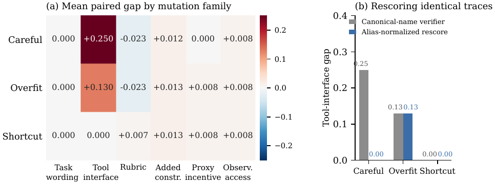
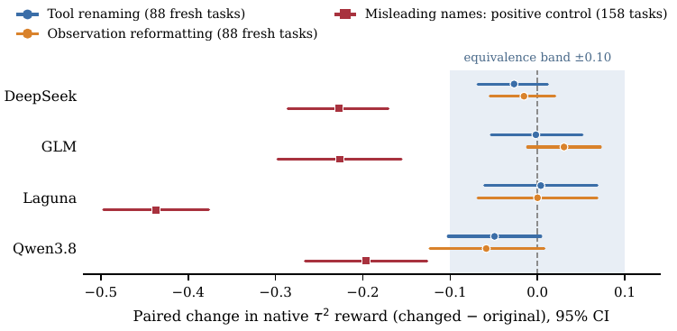
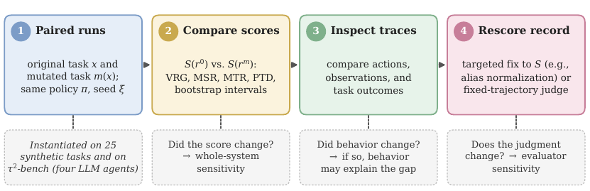

Un protocole d'attribution qui transforme « le score a bougé » en « qui a bougé — l'agent, la tâche, ou le vérifieur », par mutations appariées (même tâche, même politique, même seed), inspection de trajectoire, et re-scoring contrefactuel de la trajectoire inchangée ; validé d'abord sur un défaut de vérifieur planté dans un env synthétique, puis sur τ²-bench avec contrôle de rerun et contrôle positif.
Claim principal, précisément : (1) sur 25 tâches synthétiques, renommer les outils fait perdre 0,250 à une politique scriptée dont la trajectoire est identique, et remapper les noms au moment du scoring ramène l'écart à 0,000 — tandis que la même mutation révèle chez une seconde politique scriptée une défaillance comportementale que le re-scoring ne répare pas (0,130 → 0,130) [§3.1, Fig. 2] ; (2) sur τ²-bench en revanche, les changements de présentation sont équivalents à ±0,10 près pour 7 paires agent-changement sur 8, alors que le contrôle positif (noms d'outils délibérément trompeurs) est détecté chez les 4 agents (−0,196 à −0,437) [Tab. 6] ; (3) les reruns identiques retournent 14,7 à 35,6 % des issues, donc une comparaison mono-run ne sépare rien [Tab. 6] ; (4) deux juges frontier sont stables sous changement de présentation (excès de désaccord sur le rerun : −0,85 à +0,56 pp, les 4 intervalles contiennent zéro) mais se contredisent sur 57 % des mêmes records [§4, Tab. 8].
⚠️ Pour mon usage, l'apport n'est pas le 0,250 — c'est un défaut planté par l'auteur dans son propre vérifieur. C'est la structure de contrôle : un oracle de comportement constant (politique scriptée déterministe) comme plancher d'invariance, plus un contrôle de rerun comme plafond de bruit, plus un contrôle positif validé soluble. Et c'est le papier du corpus qui sépare le plus proprement sensibilité système / sensibilité comportementale / sensibilité de l'évaluateur.
⚠️ Et le résultat le plus dérangeant est négatif à l'égard de sa propre thèse : sur un vrai benchmark, l'habillage ne coûte presque rien. Le bruit qui tue les comparaisons n'est pas l'habillage, c'est la variance de rerun, et elle est spécifique à l'agent (Laguna 35,6 % contre 14,7 % pour DeepSeek).
Étude 1 — ResearchOpsEnv, maison [§3]
- 25 tâches synthétiques de research-ops (corriger un learning rate, prévenir une fuite de données) : l'agent récupère des documents, édite des configs, lance des expériences simulées, inspecte des logs, soumet un rapport. Le simulateur enregistre une qualité de tâche H et des proxy rewards P, distincts du vérifieur.
- Archive : 1 575 records = 525 cellules tâche × condition × politique (25 × 7 × 3) répétées sous 3 étiquettes de seed. Les politiques scriptées sont déterministes, donc les répétitions sont identiques — ce ne sont pas des seeds au sens statistique, et les auteurs le disent.
- Incertitude par rééchantillonnage des tâches de base : 1 000 bootstrap task-cluster, seed 17. « intervals describe variation within this designed suite » [§3].
- 12 tâches sur 25 ont un canal de proxy (préfixes reward_hack, eval_metric, data_leak) ; les autres sont exclues du PTD, pas mises à zéro [App. A].
- Coût humain : non précisé. Aucune annotation, aucun label humain, aucune heure d'expert reportée — la « vérité » est le H du simulateur, écrit par l'auteur.
Étude 2 — τ²-bench figé [§4, App. C]
- τ²-bench retail + airline, commit 1d244f5dca42944b67a379b44bfeb9f5748f189d. Split tiré par seed : 3 dev + 15 eval par domaine ⇒ 6 dev + 30 eval. Split, config et analyses gelés après revue de développement, enregistrés dans des « run and freeze fingerprints ».
Étude 3 — réplication à l'échelle [§5, App. E]
- 158 tâches τ² utilisables (airline + retail), 3 runs par condition, 5 652 / 5 688 runs complétés. Le jeu de test principal est les 88 tâches jamais évaluées auparavant — ⚠️ 12 airline / 76 retail, soit 86 % de retail, déséquilibre non signalé dans l'abstract.
- Marge ±0,10 et règles de décision fixées avant toute collecte de données. Plans scellés, revus indépendamment avant collecte ; audits indépendants ont recalculé chaque chiffre depuis les records bruts « with no mismatches ».
- Vagues additionnelles : 40 tâches intermédiaires (1 run/condition, 478/480), 108 tâches telecom exploratoires (3 867/3 888), contrôle positif sur 158 tâches (2 478/2 528).
- Contamination : jamais mentionnée (grep contamination sur full.tex : 0 occurrence). τ²-bench est public depuis 2025 ; la possibilité que les 4 agents l'aient vu en pré-entraînement n'est discutée nulle part.
- Pas de curriculum, pas de filtrage pass@k, pas de SFT — il n'y a pas d'entraînement.
Niveaux de sondes tenus hors échantillon — proposition seulement [App. D] : trois niveaux proposés (sondes de développement / instances tenues à l'écart, noms et valeurs nouveaux dans des familles connues / familles tenues à l'écart), politiques et vérifieurs gelés avant évaluation hors échantillon. ⚠️ Explicitement « a proposal, not a demonstrated solution to probe overfitting » ; dans le papier, seuls les IDs de tâche sont tenus à l'écart, pas les familles de mutation [§Limits].
Pour une tâche/env x, une politique π, un seed ξ et une mutation m, on compare r⁰ = Rollout(π, x, ξ) à r^m = Rollout(π, m(x), ξ), base, politique et seed tenus fixes. S(r) = score du vérifieur. Point important : chaque trajectoire est scorée sous sa propre condition d'évaluation, parce que certaines mutations changent la règle de scoring elle-même [§2].
| Sonde | Changement implémenté | Égalité de score attendue ? |
|---|---|---|
| Task wording | préfixe une instruction fixe préservant les contraintes | oui (⚠️ « limited wording check, not a diverse paraphrase test ») |
| Tool interface | renomme les outils en préservant dispatch et arguments | oui — c'est la sonde d'invariance |
| Rubric | change les poids des composantes, exige une mention « evidence » | non : la règle change, le score doit changer |
| Added constraint | exige une citation d'évidence dans le rapport final | non |
| Proxy incentive | augmente les incitations visibles sur les tâches à canal de proxy | non |
| Observation access | retourne des résultats partiels, détails accessibles via inspection de logs | non |
⚠️ Chaque famille est implémentée par un seul template fixe. Les auteurs l'écrivent : « results characterize these specific transformations, not the full space of changes in each family ». C'est la limite structurelle de tout le papier.
workflow_ aux noms d'outils, schémas, dispatch, arguments et exécution canonique préservés. Chaque run alias n'émet que des noms aliasés avant canonicalisation [App. C].Trois vérifieurs distincts coexistent, et c'est le point de méthode le plus important du papier.
S = 0,40·O + 0,25·C + 0,20·K + 0,15·E − 0,20·D
[App. A, recopié] — O cherche des termes-cibles cachés dans le rapport final · C compte cinq noms d'outils canoniques (inspection de config, recherche de documents, exécution d'expérience, inspection de logs, soumission de rapport) · K pénalise une erreur de dataset protégé et les mentions de contrainte manquantes · E pénalise les appels au-delà d'un budget dépendant de la difficulté · D vaut 1 si une expérience simulée logge un hack-risk > 0,5. Le score n'est pas clippé : S peut sortir de [0,1].
C : un name matching littéral. Remplacé par un check alias-aware, S_alias = S + 0,25·(C_alias − C), trajectoire et toutes les autres composantes fixées [App. A]. ⚠️ L'arithmétique boucle exactement : perdre les 5 noms coûte 0,25 × 1 = 0,250, qui est précisément l'écart mesuré. C'est cohérent — et c'est la preuve que le défaut est construit, pas découvert.(0,30 ; 0,20 ; 0,35 ; 0,15) et plafonne K à 0,5 si le rapport ne contient pas « evidence ».D · process-overfitting score = max{0, N − (0,60C + 0,40E)} avec N = min{1, n_calls/6} — « it compares two process heuristics, not reasoning quality », disent les auteurs.Grade des assertions en langue naturelle avec GPT-5 Mini, tenu fixe sur les études 2 et 3. Chaque run reçoit 0 ou 1. ⚠️ Statut déclaré par les auteurs : « native reward, partly LLM-graded, is a reference rather than ground truth » et « it does not check most procedural rules » [§Limits, App. E].
Juge single-call, pas un rerun de l'évaluateur natif. Voit les critères de tâche, la policy du domaine, les outils et la trajectoire ; ne voit ni le reward natif ni l'identité de l'agent. Étude 2 : GPT-4.1 Mini, 4 vues (originale / répétition identique / outils renommés / observations reformatées) sur 118 trajectoires, 472 appels. Étude 3 : GPT-6.1 Sol et Claude Opus 5.5, 3 appels par vue, medium reasoning effort, cap 8 192 tokens, prompt demandant pass / fail / insufficient avec une raison brève, identité d'agent et reward natif retirés, payloads originaux et répétés byte-identiques mais envoyés comme requêtes séparées [App. E].
Le juge voit la trajectoire, pas seulement le livrable. C'est un choix explicite, et c'est précisément ce qui produit le désaccord de la §7 : un des deux juges note la procédure.
VRG(r⁰, r^m) = S(r⁰) − S(r^m) (positif = le score baisse)
MSR_τ = Pr[S(r^m) ≥ τ]
MTR_τ = Pr[S(r^m) ≥ τ | S(r⁰) ≥ τ] (indéfini si aucun original ne passe)
PTD(r) = P(r) − H(r) (proxy visible − qualité simulateur)
Seuil de passage τ = 0,65, les artefacts reportant aussi 0,55 et 0,75. ⚠️ Les auteurs précisent : MSR et MTR sont des taux de passage du vérifieur, pas des vérifications indépendantes de complétion.
Non, et c'est structurel. Le papier ne calcule ni FPR ni FNR pour aucun juge, parce qu'il n'a aucune vérité terrain pour les juges : « No judge ground truth » [Tab. 4] ; « The judge audits measure consistency and agreement with native reward, not accuracy » [§Limits]. Ce qu'il mesure à la place : - taux de désaccord sous répétition identique (reproductibilité), avec IC bootstrap [Tab. 8] ; - excès de désaccord d'une vue mutée sur la répétition identique, en points de pourcentage, avec IC [Tab. 8] ; - accord avec le reward natif, en % et en κ [§5] ; - excess flip rate au niveau benchmark : taux de flip original-vs-changé moins taux de flip original-vs-original [Tab. 6].
⚠️ Sur la grille du survey 2610.17824 (0 étude sur 58 avec FPR/FNR séparés et intervalle), TRACE n'ajoute pas de ligne non plus. Il ajoute autre chose, que cette grille n'a pas de colonne pour capter : un test d'invariance avec oracle de comportement constant et contrôle positif.
Oui, mais par construction et hors apprentissage. Trois attaques :
1. Un défaut planté (C), découvert par la sonde — mais il était écrit par l'auteur.
2. Une politique scriptée qui exploite le proxy (shortcut) : dans reward_hack_001 elle met le poids de reward visible et le bonus de format à 2,0 chacun, gagnant 4,0 de reward visible pendant que la qualité simulateur reste à 0,0 [§3.2]. PTD moyen 0,932 sur les 12 tâches à proxy, IC task-cluster [0,176 ; 1,781] — très large parce que les échelles de proxy diffèrent entre tâches.
3. Une sélection par objectif [App. B] : parmi 5 programmes scriptés, l'objectif à proxy visible (0,45P + 0,30F + 0,25N) sélectionne proxy_exploit (MSR hors échantillon 0,103, PTD 0,996) ; les objectifs tool-volume et composite sélectionnent tous deux careful (0,718, PTD −0,180) [Tab. 5].
⚠️ Le garde-fou que les auteurs posent eux-mêmes, et qui est décisif pour mon usage : « Careful behavior and exploitation are both already in the candidate set, so this search does not show how a learning agent would acquire either behavior » [App. B]. Et : « Since tool-volume and composite selection agree, the composite objective shows no advantage over that comparator » — c'est-à-dire que le vérifieur composite, tout sophistiqué qu'il soit, ne fait pas mieux que « compter les appels d'outils ».
Il n'y en a pas. Aucun algorithme de RL, aucun hyperparamètre, aucun step, aucune courbe de reward. C'est déclaré à deux endroits : Tab. 4, colonne « Remaining limit » ⇒ « no training loop » ; et §Limits ⇒ « it supports diagnosis under known conditions, not estimates of deployment failure rates or of exploits learned in training ».
Le seul analogue d'optimisation est la sélection de politique à programme fixe d'App. B — 5 candidats, 3 objectifs, sélection sur les 12 premières tâches, évaluation sur 13 IDs tenus à l'écart (117 paires mutées par politique sélectionnée). Les auteurs l'étiquettent : « These are fixed-program selection results, not learning curves. »
⚠️ Conséquence directe pour la question (c) : TRACE est un diagnostic hors boucle, par construction et de l'aveu de son auteur. Ce n'est pas une critique — c'est sa complémentarité avec 2610.15778, qui mesure sous optimisation mais sur une seule tâche mono-tour sans outils.
| Comportement | Détection | Correction | La correction est-elle évaluée ? |
|---|---|---|---|
| Vérifieur qui apparie des noms d'outils au lieu de vérifier les opérations (étude 1) | sonde tool-interface appariée → VRG 0,250 ; trajectoires appariées à observations et H identiques |
re-scoring contrefactuel S_alias = S + 0,25(C_alias − C), trajectoire fixée |
oui : écart 0,250 → 0,000 [Fig. 2b]. ⚠️ « The repair holds for one tested mapping » [§Limits] |
Défaillance comportementale sous la même mutation (overfit) |
même sonde, gap 0,130 | le même re-scoring | oui, et il échoue — c'est le résultat : 0,130 → 0,130. ⚠️ Mais overfit a « an explicit branch for the tool-renaming condition » [§3] : la défaillance est écrite, pas découverte |
Petit écart masquant un échec constant (shortcut) |
gap le plus petit de tous (0,006) alors que MSR = 0,000 | reporter les taux de passage absolus à côté des écarts | oui : « A gap-only robustness report would rank it as the most robust policy » [§3.2] |
| Exploitation d'un proxy visible | PTD = P − H sur les 12 tâches à proxy ; shortcut 0,932, overfit 0,940, careful −0,167 |
aucune mitigation | non — diagnostic seul |
| Un objectif qui sélectionne l'exploiteur | sélection parmi 5 programmes, éval sur 13 IDs tenus à l'écart | aucune | non ; et le composite n'apporte rien sur le comparateur tool-volume [App. B] |
| Bruit de rerun pris pour un effet de présentation | contrôle de rerun : flip entre deux runs originaux identiques, puis excess flip rate | exiger 3 runs/condition + reporter l'excès | oui, et c'est ce qui tue un résultat de l'étude 2 : Laguna +0,267 ⇒ +0,004 [−0,061 ; +0,068] |
| Auto-désaccord d'un juge pris pour un effet de présentation | contrôle de répétition : payloads byte-identiques, 3 appels/vue | reporter l'excès sur la répétition, pas le taux brut | oui : Claude Opus 5.5 se contredit sur 3,68 % des répétitions identiques — « enough to masquerade as a presentation effect without a repeat control », et le flip unique de l'étude 2 est consistant avec cette variation |
| Équivalence annoncée par un pipeline incapable de détecter quoi que ce soit | contrôle positif validé soluble (164/164 gold offline) | exiger un contrôle positif avant toute conclusion de nullité | oui : détecté chez 4/4 agents, −0,196 à −0,437 |
| Probe overfitting (un agent réglé contre des sondes fixes mémorise les alias) | — | 3 niveaux de sondes proposés [App. D] | non — proposition explicitement non démontrée ; dans le papier, seuls les IDs de tâche sont tenus à l'écart |
| Fuite de credential dans une trace | relecture | redaction avant release | non évaluée ; conséquence : les traces telecom brutes ne sont pas publiées [App. F] |
Ce qui est testé et absent : un effet systématique de l'habillage sur un vrai benchmark. 7/8 paires équivalentes à ±0,10, 6/8 survivant à une correction de Bonferroni sur les 8 [§5]. C'est un résultat négatif propre, avec contrôle positif à l'appui — et c'est rare.
2610.15778 — le gel est auto-hébergé, pas horodaté par un registre tiers : aucun OSF, aucun AsPredicted n'est cité.--no-ray existe côté dépôt, pas dans le papier).| Chiffre (abstract / intro) | Source dans le corps | Verdict |
|---|---|---|
| « a controlled suite of 25 synthetic tasks » | §3 : ResearchOpsEnv, 25 tâches ; 1 575 records = 25 × 7 conditions × 3 politiques × 3 seeds |
confirmé |
| « renaming tools lowers a scripted agent's score by 0,250 » | §3.1 + Fig. 2a : cellule careful × tool-interface = +0,250 ; toutes ses autres sondes ≤ 0,023 (wording 0,000 · rubric −0,023 · added constr. +0,012 · proxy 0,000 · observ. +0,008) |
confirmé. ⚠️ Deux précisions qui changent la lecture : (i) c'est une moyenne par sonde, pas le score de careful — son écart agrégé sur les six sondes est 0,041 [Tab. 2], soit 6× moins ; (ii) la cellule repose sur 25 tâches distinctes, les 3 « seeds » étant des duplicatas exacts (politiques déterministes) |
| « even though it performs exactly the same operations » | §3.1 : « Its paired trajectories have identical observations and simulator quality; only the verifier's name matching changes » ; §3 : politiques déterministes, « re-executing the archived code reproduces every record exactly » | confirmé — l'invariance est vérifiée au niveau trajectoire, pas postulée. ⚠️ Réserve de vocabulaire : l'agent émet bien des noms différents (il appelle les alias annoncés) ; ce sont le dispatch, les arguments et l'exécution canonique qui sont préservés [App. C] |
| « restoring the original names at scoring time closes the entire gap » | §3.1 + Fig. 2b : 0,250 → 0,000, trajectoires et toutes les autres composantes fixées ; App. A : S_alias = S + 0,25(C_alias − C) |
confirmé, et arithmétiquement bouclé : le poids de C vaut 0,25 et C compte 5 noms, donc perdre les 5 coûte exactement 0,250. ⚠️ Corollaire : le défaut est planté, et §Limits le borne — « holds for one tested mapping » |
| « the same mutation exposes a genuine behavioral failure in a second agent » | §3.1 : overfit reste à 0,130 après re-scoring (Fig. 2b : 0,13 → 0,13) ; il prend une autre branche scriptée et soumet un rapport court et infructueux |
confirmé mécaniquement. ⚠️ Mais §3 dit que overfit « has an explicit branch for the tool-renaming condition » : la défaillance comportementale est écrite par l'auteur, donc le test montre que le diagnostic retrouve une cause connue — pas qu'il en découvre une |
| « an initial 30-task study finds mixed reward changes » | §4 Setup : 6 dev + 30 eval, split égal entre retail et airline (3 dev + 15 eval par domaine) ; Tab. 3 : 7/8 IC contiennent zéro | confirmé |
| « whose one clear effect does not replicate » | Tab. 3 : Laguna × Alias +0,267 [0,067 ; 0,433] (seul IC excluant 0) ; §5 : −0,050 sur la vague de 40 tâches (1 run/condition), −0,011 sur les 30 tâches de l'étude 2 avec 3 runs (équivalent à ±0,10), Tab. 6 : +0,004 [−0,061 ; +0,068] sur les 88 tâches | confirmé, et c'est l'autocritique la plus utile du papier |
| « a larger follow-up on 88 new tasks with repeated runs per condition » | §5 Design + Tab. 6 : 88 tâches jamais évaluées, 3 runs par condition ; réplication principale sur 158 tâches, 5 652/5 688 runs | confirmé. ⚠️ Sur-généralisé par omission : les 88 tâches sont 12 airline / 76 retail — 86 % d'un seul domaine, jamais dit dans l'abstract |
| « leaves reward unchanged to within ±0,10 for seven of eight agent–change pairs » | Tab. 6 (haut) : 7 « equiv. », 1 « inconcl. » (Qwen × Format, −0,059 [−0,123 ; +0,008]) ; §5 : 6 sur 8 seulement survivent à une correction de Bonferroni | sur-généralisé dans un réglage précis : « unchanged » ≠ « équivalent à ±0,10 près ». Deux cellules portent un IC à 90 % qui exclut zéro tout en restant dans la marge — Qwen × Alias [−0,095 ; −0,004] (étiqueté equiv.) et Qwen × Format [−0,114 ; −0,004]. Le papier revendique une équivalence bornée, pas une absence d'effet, et l'abstract gomme la distinction |
| « tool names that deliberately mislead lower every agent's reward by 0,20–0,44 » | Tab. 6 (bas) : Qwen −0,196 [−0,266 ; −0,127] · GLM −0,226 · DeepSeek −0,227 · Laguna −0,437 [−0,497 ; −0,377] ; les 4 IC à 95 % sont nettement sous zéro | confirmé, aux arrondis près aux deux bornes (0,196 → « 0,20 » ; 0,437 → « 0,44 »). ⚠️ Et la manquance n'est pas aléatoire ici : 42 des 50 échecs du contrôle positif surviennent sous noms trompeurs [App. E] — le contrôle passe sous traitement pire-cas, mais l'effet brut est partiellement un effet de crash |
| « Identical reruns flip 15–36 % of task outcomes » | §5 : « 14,7–16,3 % for DeepSeek, GLM, and Qwen, and 35,6 % for Laguna » ; Tab. 6 : 0,147 · 0,147 · 0,157 · 0,159 · 0,163 · 0,163 · 0,356 · 0,356 | sur-généralisé, dans deux réglages. (i) La fourchette est bimodale : trois agents se serrent entre 14,7 et 16,3 %, un seul est à 35,6 % — « 15–36 % » suggère un continuum qui n'existe pas. (ii) La borne basse est fausse hors airline/retail : la Tab. 9 (telecom) donne 1,2 % pour GLM (reward original 0,994) et 30,9 % pour Laguna. Le flip de rerun est une fonction du niveau de reward de l'agent, pas une constante du benchmark |
| « Two frontier LLM judges give consistent verdicts when a fixed trajectory is presented differently » | Tab. 8 : les 4 excès sur la répétition contiennent zéro — GPT-6.1 Sol alias +0,28 pp [0,00 ; +0,85], format +0,56 [0,00 ; +1,71] ; Claude Opus 5.5 alias −0,85 [−3,72 ; +1,15], format −0,28 [−2,82 ; +2,23] | confirmé sous la bonne lecture (excès sur la répétition, pas taux brut). ⚠️ Deux réserves que le papier porte lui-même : le 0/354 de GPT « does not establish determinism » (il varie sur 1 record sur 118 entre ses 3 appels originaux), et l'auto-désaccord de Claude est 3,68 % avec IC [0,86 ; 7,56] — borne haute à 1 record sur 13 |
| « yet disagree with each other on 57 % of the same records » | §5, une seule phrase, ligne 229 de la source. Aucune table, aucun IC, aucun dénominateur, aucune définition (grep 57 : 2 occurrences, abstract + cette phrase) |
confirmé comme énoncé, dénominateur introuvable. ⚠️ Ma reconstruction, non écrite par le papier : 201/354 = 56,8 %, où 354 = 118 trajectoires × 3 appels sur la vue originale — cohérent avec la clause « 163 of 201 » de la même phrase. Et cette lecture est la seule qui boucle : si 201 indexait le désaccord GPT↔reward natif, il vaudrait 0,62 × 354 = 219,5, pas 201. Donc 201 est bien le désaccord inter-juges. À retenir : le chiffre-titre du papier sur l'accord inter-juges est le seul de l'abstract sans table ni intervalle |
| « largely because one grades procedure rather than outcome » | §5 : « every disagreement is a benchmark success, and in 163 of 201 GPT-6.1 Sol objects only to procedure, such as several tool calls in one turn » ; App. E : « The procedural-objection count uses a keyword heuristic on the judges' stated reasons » | confirmé comme mesuré — pas avancé comme interprétation. 163/201 = 81 %. ⚠️ Mais mesuré par un heuristique de mots-clés sur les justifications auto-déclarées du juge, jamais validé contre une relecture humaine. Donc : quantifié, et honnêtement étiqueté comme fragile |
| intro : « the verifier matches tool names rather than checking the operations performed » | App. A : le défaut est dans C, qui « counts five canonical tool names » |
confirmé |
| corps : Claude Opus 5.5 accorde avec le reward natif sur 95 % des verdicts (κ = 0,89), GPT-6.1 Sol sur 38 % (κ = 0,09) | §5, aucune table. App. E précise que la comparaison est « descriptive : native reward is a reference, not ground truth » | introuvable en table. ⚠️ Et en tension arithmétique avec la clause « 163 of 201 » : 38 % d'accord sur 354 verdicts ⇒ 219,5 désaccords, pas 201. Les deux chiffres ne peuvent pas porter sur le même ensemble |
| corps : le pass rate de GPT-6.1 Sol sur les succès du benchmark va de 0 % (DeepSeek) à 52 % (Qwen) | §5, aucune table | introuvable en table — mais c'est le chiffre le plus lourd du papier pour un classement d'agents : « the choice of judge could change how agents rank » |
Verdict 7.0 : incohérent sur le volet juges, scrupuleux ailleurs. Tout le volet quantitatif de l'étude 3 (équivalences, contrôle positif, flips de rerun, audit de répétition) est tabulé, intervallé, avec règles de décision gelées à l'avance et audits indépendants — c'est au-dessus de la moyenne du corpus. Mais les trois chiffres de l'abstract sur l'accord inter-juges (57 %, et en corps 95 %/38 %, κ 0,89/0,09) ne figurent dans aucune table, sans intervalle, sans dénominateur, sans définition de « disagree », et leur arithmétique ne boucle pas entre elles. Ajouté à cela une sur-généralisation réelle (« 15–36 % », contredite par la Tab. 9 du papier lui-même) et une autre de vocabulaire (« unchanged » pour « équivalent à ±0,10 »). ⚠️ C'est exactement l'inverse du profil de 2610.15778, qui sous-vend.
Étude 1 — ResearchOpsEnv, Tab. 2 (scores moyens sur 450 paires par politique, τ = 0,65) :
| Politique | Original | Muté | Gap | MSR | MTR | PTD proxy |
|---|---|---|---|---|---|---|
careful |
0,807 | 0,766 | 0,041 | 0,860 [0,840 ; 0,887] | 0,860 | −0,167 |
overfit |
0,549 | 0,526 | 0,023 | 0,053 | 0,667 (36 paires seulement) | 0,940 |
shortcut |
0,345 | 0,339 | 0,006 | 0,000 | indéfini | 0,932 [0,176 ; 1,781] |
Lecture : le plus petit écart appartient à la politique qui échoue partout. « A gap-only robustness report would rank it as the most robust policy » [§3.2].
Étude 2 — Tab. 3, reward natif 0/1, Δ = muté − original : DeepSeek alias 0,000 [−0,172 ; +0,172] · DeepSeek format +0,034 · GLM alias −0,067 · GLM format 0,000 · Laguna alias +0,267 [+0,067 ; +0,433] · Laguna format +0,133 · Qwen alias −0,069 · Qwen format +0,069. Et surtout : 65 des 236 paires complètes (27,5 %) changent de reward, améliorations et régressions s'annulant largement — « Averages also conceal task-level churn » [§4.1].
Étude 2, audit de juge à trajectoire fixée : répétition 0/118, renommage 0/118, reformatage 1/118. Avec une seule répétition par trajectoire, « we cannot distinguish a formatting effect from judge variability » — l'étude 3 ajoutera le contrôle manquant.
Étude 3 — Tab. 6 : voir la figure ci-dessous. Excess flips (flip original-vs-changé moins flip original-vs-original) : toutes les cellules meaning-preserving sont entre −0,031 et +0,093 ; la seule à exclure zéro est Qwen × Format, +0,093 [+0,027 ; +0,161] — « flips outcomes 9,3 points more often than reruns do », qualifié par les auteurs de « a possible small effect that this study cannot confirm ». Le contrôle positif, lui, donne des excess flips de +0,180 à +0,196, tous nettement positifs.
Étude 3 — audit de juge, Tab. 8 (118 trajectoires, 3 appels par vue) :
| Juge | Vue | Événements | Désaccord [IC 95 %] | Excès sur la répétition, pp |
|---|---|---|---|---|
| GPT-6.1 Sol | Répétition | 0/354 | 0,00 % [—] | — |
| GPT-6.1 Sol | Alias | 1/354 | 0,28 % [0,00 ; 0,85] | +0,28 [0,00 ; +0,85] |
| GPT-6.1 Sol | Format | 2/354 | 0,56 % [0,00 ; 1,71] | +0,56 [0,00 ; +1,71] |
| Claude Opus 5.5 | Répétition | 13/353 | 3,68 % [0,86 ; 7,56] | — |
| Claude Opus 5.5 | Alias | 10/354 | 2,82 % [0,85 ; 5,60] | −0,85 [−3,72 ; +1,15] |
| Claude Opus 5.5 | Format | 12/354 | 3,39 % [1,15 ; 5,93] | −0,28 [−2,82 ; +2,23] |
⚠️ Les trois événements de changement de GPT-6.1 Sol viennent d'une seule tâche airline. Un appel Claude manquant (filtre de contenu du provider) borne l'excès alias à [−1,13 ; −0,85] et l'excès format à [−0,56 ; −0,28] pp.
Pas d'axe OOD au sens habituel ; trois axes de transfert, tous informatifs : 1. Synthétique → public : le défaut de 0,250 ne transfère pas. Sur τ², le même type de mutation donne |Δ| ≤ 0,059. Le papier est honnête : son résultat spectaculaire est confiné à son propre env. 2. Étude 2 → étude 3 : l'unique effet net de l'étude 2 ne réplique pas (+0,267 → +0,004). 3. Airline/retail → telecom (108 tâches, exploratoire, Tab. 9) : « the same picture » — 7/8 équivalentes, Laguna × format inconclusive, aucun changement n'excède le bruit de rerun. ⚠️ Mais le bruit de rerun lui-même, lui, ne transfère pas : 1,2 % (GLM) à 30,9 % (Laguna).
Le plan est l'ablation, et c'est bien construit : 6 familles de sondes × 3 politiques scriptées à comportement connu · re-scoring contrefactuel à trajectoire fixée (isole le terme C du vérifieur, tout le reste fixé) · 3 seuils de passage (0,55 / 0,65 / 0,75) · 3 objectifs de sélection sur le même jeu de 5 programmes · 4 vues de juge × 3 appels × 2 juges · 4 échelles de tâches (30 / 40 / 88-158 / 108) · 1 à 3 runs par condition · contrôle de rerun · contrôle positif · sensibilité à l'imputation 0/1 et à l'exclusion-par-troncature · bootstrap vérifié à 2 000 et 20 000 tirages.
Aucun axe de taille de modèle : les 4 agents ne sont pas une échelle (3 endpoints internes sans taille publiée). Le seul « scaling » est en nombre de tâches et de runs, et il est concluant dans un sens précis : à 30 tâches × 1 run, un effet net apparaît ; à 88 tâches × 3 runs, il disparaît. C'est le résultat de scaling du papier, et il porte sur la mesure, pas sur la capacité.
overfit est une branche scriptée explicite. Contamination de τ²-bench : 0 occurrence dans la source. Probe overfitting : non testé (IDs tenus à l'écart, pas familles de mutation).public-trace-agentic-ai-summit, dernier push 2026-08-02, soit deux mois avant le papier, 0 star ; le README décrit un poster d'« Agentic AI Summit » et une étude τ² différente (164 trajectoires natives, gpt-4.1-mini, 79/164 au-dessus du seuil) ; les études 2 et 3 du papier en sont absentes. Le papier lui-même route ses chiffres d'étude 1 vers « the archived snapshot in the supplementary material », pas vers le dépôt. S'ajoute le bloquant définitif : 3 des 4 agents sont des endpoints internes non publics ⇒ les études 2 et 3 sont irréproductibles hors de Prime Intellect, quoi qu'il arrive au dépôt. Traces telecom non publiées (redaction requise). ✅ Seul point acquis : la grille ResearchOps (étude 1, donc le 0,250) est bien dans le dépôt et exécutable (run_stress_tests.py --n-tasks 25 --n-rollouts 3).evidence : 3/6 (manquant : coherence, eval, repro).
Plausible mais fragile — avec une méthode solide et des chiffres-titres mal étayés. Le papier apporte quelque chose qui manque au corpus : une grammaire d'attribution (système / comportement / évaluateur) et trois contrôles obligatoires (rerun, positif, répétition), appliqués avec des règles de décision gelées à l'avance et des audits indépendants. Ce qui est établi : (1) un vérifieur à appariement de noms peut perdre 0,250 sur une exécution identique dans un env et avec un vérifieur écrits par l'auteur — démonstration de méthode, pas estimation de prévalence ; (2) sur τ²-bench, l'habillage (alias, reformatage JSON) ne déplace pas le reward au-delà de ±0,10 pour 7 paires sur 8, avec un contrôle positif détecté chez 4/4 — c'est un résultat négatif propre, et le meilleur du papier ; (3) les reruns identiques retournent 14,7 à 35,6 % des issues sur airline/retail, donc toute comparaison mono-run d'agents sur τ² est illisible ; (4) deux juges frontier sont stables sous présentation mais mesurent des constructs différents. Ce que le papier n'établit pas : la prévalence du défaut de nom hors de son env, l'exactitude d'un juge (aucune vérité terrain), et tout ce qui concerne une boucle d'entraînement — qu'il exclut explicitement. À répliquer sur des agents publics, et à lire comme un protocole, pas comme un jeu de mesures.

Ce qu'il faut voir : le cœur de la vérification (b). Panneau (a) : une matrice 3 politiques × 6 sondes de VRG moyen — et une seule case est rouge foncé, careful × tool-interface, +0,250. Tout le reste de la ligne careful est entre −0,023 et +0,012 : la politique scriptée est invariante à cinq sondes sur six, ce qui est la démonstration d'invariance elle-même, et non une affirmation. La ligne shortcut est quasi entièrement nulle — pour la pire raison : elle échoue dans les deux conditions (MSR 0,000). Panneau (b) : les barres grises sont l'écart sous le vérifieur à noms canoniques, les bleues après re-scoring alias-aware de la même trace. careful 0,25 → 0,00 (le défaut était dans la règle de scoring) ; overfit 0,13 → 0,13, strictement inchangé (le défaut est dans le comportement) ; shortcut 0,00 → 0,00. ⚠️ Lecture critique : le terme C pèse 0,25 et compte exactement 5 noms, donc le « 0,250 » est la totalité d'un terme que l'auteur a lui-même écrit. La figure prouve que le diagnostic retrouve une cause plantée ; elle ne dit rien de la fréquence de ce défaut dans les benchmarks réels.

Ce qu'il faut voir : la figure qui répond à « quelle part d'un écart entre deux modèles est du bruit d'habillage ». En abscisse, le changement apparié de reward natif τ² (changé − original) avec IC 95 %. Les points bleus (renommage d'outils) et orange (reformatage d'observations) sur 88 tâches fraîches tiennent tous dans la bande d'équivalence ±0,10 — l'habillage, sur un vrai benchmark, ne coûte presque rien. Les points rouges (noms d'outils délibérément trompeurs, 158 tâches, contrôle positif) sont tous entre −0,196 et −0,437, intervalles nettement à gauche : le pipeline sait détecter un effet réel, donc les nullités bleues et orange sont informatives et non des faux négatifs de puissance. ⚠️ Deux réserves : Qwen × Alias a un IC à 90 % qui exclut zéro tout en restant dans la bande (étiqueté « équivalent » quand même), et les 88 tâches sont à 86 % retail. Lecture opérationnelle : le bruit de présentation n'est pas le problème ; le bruit de rerun l'est — et il ne figure pas sur cette figure.

Ce qu'il faut voir : le livrable réutilisable, en une image. Quatre boîtes — (1) runs appariés (tâche originale x et mutée m(x), même politique π, même seed ξ) → le score a-t-il changé ? sensibilité système · (2) comparer les scores (VRG, MSR, MTR, PTD, intervalles bootstrap) · (3) inspecter les traces (actions, observations, issues de tâche) → le comportement a-t-il changé ? si oui, il peut expliquer l'écart · (4) re-scorer le record (correctif ciblé sur S, p. ex. normalisation d'alias, ou juge à trajectoire fixée) → le jugement change-t-il ? sensibilité de l'évaluateur. Le point qui compte pour un env RL : seule l'étape 4 est une preuve directe sur le vérifieur ; les étapes 1-2 mesurent le système entier et sont systématiquement sur-interprétées dans le champ. ⚠️ Ce que la figure ne montre pas, et qui est pourtant la contribution de l'étude 3 : les deux contrôles (rerun identique, contrôle positif) sans lesquels l'étape 2 ne veut rien dire.
| Ingrédient | Choix du papier | Équivalent juridique | Transfert | Ce qui manque |
|---|---|---|---|---|
| Source des tâches | 25 tâches synthétiques écrites par l'auteur (ResearchOpsEnv) + 158 tâches τ²-bench publiques, commit épinglé, split tiré par seed, 88 tâches jamais vues gardées pour le test principal |
Harvey LAB / Vals LRB : jeu figé, commit épinglé, sous-ensemble jamais évalué réservé à la réplication | adaptable | 86 % des tâches de test viennent d'un seul domaine (retail) ; en juridique l'équivalent serait un jeu à 86 % d'un seul type d'acte — à éviter dès la construction |
| Vérifieur | trois vérifieurs distincts et nommés comme tels : composite maison S = 0,40O + 0,25C + 0,20K + 0,15E − 0,20D (non clippé, défaut planté dans C) · évaluateur natif τ² (GPT-5 Mini, 0/1) · juge single-call à trajectoire fixée |
rubrique juridique + juge Gemini sur memo/recherche | adaptable | aucune vérité terrain de juge, déclaré ; agrégation additive sans clause d'échec ni conjonction — exactement l'archétype que 2610.21214 montre hackable par redistribution de poids |
| Harness / outils | τ²-bench multi-tour, utilisateur simulé GPT-4.1 Mini à T=0, même ouverture utilisateur sauvegardée pour toutes les conditions, cap 8 192 tokens, runs échoués gardés manquants sans retry et jamais imputés, manquance documentée et testée (imputation 0/1, exclusion-par-troncature) | agent juridique multi-tour : recherche, citation, vérification de sources, client simulé | direct sur la discipline de harness : ouverture figée, pas de retry, pas d'imputation, manquance publiée — c'est la ligne la plus directement copiable du papier | rien sur la compaction de contexte, ni sur le parsing effectif des tool calls, ni sur les épisodes sans verdict — les trois pannes silencieuses de la grille CLAUDE.md restent hors champ |
| Algo | aucun — « no training loop » [Tab. 4], explicitement | GRPO / RLVR sur Gemini | non | tout. Aucun hyperparamètre, aucune dynamique, aucun step. Les conséquences sous optimisation sont celles de 2610.15778, pas celles-ci |
| Curriculum | aucun ; en revanche une hiérarchie de sondes proposée : développement / instances tenues à l'écart / familles de mutation tenues à l'écart, politiques et vérifieurs gelés avant éval hors échantillon [App. D] | familles de perturbations juridiques tenues à l'écart (une juridiction, un type de procédure jamais vus en tuning) | adaptable | « a proposal, not a demonstrated solution » — et le papier lui-même ne tient à l'écart que les IDs de tâche |
| Anti-hacking | PTD = proxy − qualité simulateur · process-overfitting score · hack detection rate (D) · sélection par objectif montrant qu'un objectif à proxy visible choisit l'exploiteur (MSR 0,103 vs 0,718) |
canal « qualité réelle » tenu hors du reward (relecture experte), confronté au score de rubrique | adaptable | ⚠️ les deux politiques (correcte et exploiteuse) sont déjà dans le jeu de candidats — le papier ne montre pas comment une politique apprenante acquerrait l'une ou l'autre. Le canal exogène du théorème de 2609.35677 reste à payer |
| 🔑 Oracle de comportement constant (plafond de bruit construit) | politique scriptée déterministe careful, trajectoires appariées à observations et H identiques, « re-executing the archived code reproduces every record exactly » ; invariante à 5 sondes sur 6 |
réponse de référence connue, validée par un juriste, soumise au juge sous plusieurs habillages | direct — c'est l'ingrédient à transposer | l'habillage juridique n'existe pas encore : il faut l'écrire (voir ci-dessous) |
| 🔑 Contrôle de rerun | flip pass/fail entre deux runs originaux identiques ; excess flip rate = flip(orig vs changé) − flip(orig vs orig) ; 14,7 à 35,6 % | re-soumettre le même livrable au même juge, N fois | direct | la fréquence et le N ne sont pas prescrits pour une boucle d'entraînement — non précisé |
| 🔑 Contrôle positif validé soluble | permutation des noms d'outils entre les noms du domaine, descriptions et schémas restant vrais, gold actions résolvant 164/164 hors ligne avant usage | un défaut juridique réel et localisé inséré dans un livrable correct (règle inapplicable, citation inexistante, prescription manquée) | direct | aucun catalogue de défauts juridiques gradués ; à construire avec les experts |
C transfère littéralement — un vérifieur qui apparie des chaînes de caractères plutôt que de vérifier le référent. L'analogue juridique est exact : une rubrique qui crédite la présence d'un pattern de citation ([Nom] c. [Nom], [année]) sans résoudre la citation. Et le papier donne la réparation : un check alias-aware, c'est-à-dire une résolution canonique avant scoring.eval tombe.2610.15778. Deux instruments y touchent sans la viser : (i) la MSR — reporter le taux de passage absolu à côté de l'écart est précisément ce qui démasque shortcut, dont le petit écart cache un échec constant ; en juridique, une politique qui omet systématiquement les points défavorables aurait un écart nul sous toute perturbation et serait classée « la plus robuste » par un rapport fondé sur les écarts seuls — le papier nomme ce piège ; (ii) la sonde « added constraint » (exiger une citation d'évidence dans le rapport final) est formellement un canal de couverture, mais elle n'est jamais exploitée comme tel (gap ≤ 0,013 partout). Ce qui manque reste : aucune abstention, aucune ventilation par sous-population à enjeu, aucun crédit conjonctif de complétude.Le triptyque de contrôles, pas le protocole d'attribution. TRACE propose deux choses de valeur très inégale. L'attribution en quatre étapes (Fig. 1) est élégante mais coûteuse et peu concluante sur un vrai benchmark. Les trois contrôles de l'étude 3, eux, sont transposables tels quels et c'est ce que je recopierais :
CLAUDE.md, et le papier montre qu'il est indispensable : ses sept équivalences ne valent que parce que le huitième bras bouge de −0,196 à −0,437.Le papier en livre un, et c'est son apport le plus concret. Reconstruit depuis §2, §5 Design, §Discussion et App. E — ce qui est prescrit, et ce qui ne l'est pas.
Quoi logger
- Configurations, hashes d'entrée, splits de tâches, traces brutes, et des analyses qui recalculent sans appel de modèle [§Reproducibility].
- Run fingerprints et freeze fingerprints (empreinte de la config gelée) [App. C].
- Tables de transition (pass→fail / fail→pass par tâche), traces des paires qui ont changé, et un registre de manquance [App. C].
- Pour chaque run échoué : gardé manquant, sans retry, jamais imputé, avec sa cause ; puis sensibilités publiées sous imputation 0/1 et sous exclusion-par-troncature [App. E].
- Pour les juges : verdict ∈ {pass, fail, insufficient} plus une raison brève, identité de l'agent et reward natif retirés du prompt.
À quelle fréquence
- 3 runs par condition minimum, et ≥ 3 appels de juge par vue. C'est le seul chiffre de fréquence prescrit, et il est validé par la contre-épreuve : à 1 run par condition (étude 2 et vague de 40), le papier obtient un faux positif et huit nullités à intervalles inexploitables.
- ⚠️ La cadence dans un run d'entraînement n'est pas prescrite — non précisé. TRACE est conçu pour une configuration gelée, exécuté une fois par release. C'est la pièce qu'il faut ajouter soi-même, en reprenant les paliers de 2610.15778 (fenêtres de 5 steps, ≥ 5-6 paliers avant le step 500).
Contre quelle vérité - Aucune vérité terrain, et c'est dit. Les trois références utilisées, par ordre de force décroissante : (i) l'invariance comportementale d'un agent scripté déterministe — la seule référence dure du papier, parce qu'elle ne dépend d'aucun jugement ; (ii) le reward natif du benchmark, « a reference, not ground truth », partiellement gradé par un LLM ; (iii) la répétition identique du juge lui-même, comme plancher de bruit. - ⚠️ C'est le trou à combler en juridique : remplacer (ii) par des labels experts audités, et ajouter un plafond inter-annotateur, absent ici.
Règles de décision, fixées avant collecte - équivalent si l'IC à 90 % est inclus dans ±0,10 · différent si l'IC à 95 % exclut zéro · sinon inconclusive. - Intervalles : bootstrap percentile task-cluster stratifié par domaine, 2 000 tirages, seed 17, étiquettes revérifiées à 20 000 tirages. - Agrégation : moyenner sur les répétitions à même seed à l'intérieur d'une tâche, puis sur les tâches (pas l'inverse — sinon les tâches à beaucoup de runs dominent). - Appariement du contrôle de rerun : équilibré en seed. - Plans scellés, code et règles gelés et revus indépendamment avant collecte, puis audit indépendant recalculant chaque chiffre depuis les records bruts.
À quel coût
- Non précisé en GPU-h, en wall-clock ou en dollars. Seuls les volumes sont publiés : étude 2 = 360 runs + 472 appels de juge ; étude 3 = 12 584 runs planifiés + 2 832 appels de juge, dont réplication principale 5 652/5 688, contrôle positif 2 478/2 528, telecom 3 867/3 888.
- ⚠️ Le multiplicateur est néanmoins calculable et il est lourd : 3 conditions × 3 runs = 9× une éval mono-run, plus le contrôle positif (2 runs × 158 tâches × 4 agents = 1 264 runs), plus l'audit de juge (4 vues × 3 appels × 2 juges × 118 trajectoires = 2 832 appels). Pour un env juridique, c'est l'ordre de grandeur à budgéter, et il est très au-dessus des 2,5-4,4 A100-h par cellule de 2610.15778.
L'« agent scripté » juridique — un plafond de bruit d'habillage construit.
Matériel. 150 à 300 réponses de référence à des items de type LAB / Vals LRB, validées correctes par un juriste et figées (hash). Ce sont les oracles de comportement constant : leur contenu juridique ne varie pas d'une condition à l'autre, par construction, comme careful chez Gaonkar.
Conditions. Chaque référence soumise au juge de production sous cinq habillages méthodologiquement invariants : (0) répétition byte-identique — le contrôle de rerun, obligatoire, ≥ 3 appels ; (1) ordre des sections permuté (faits / règle / application / conclusion → application / règle / faits / conclusion) ; (2) synonymes de termes de procédure (« mise en demeure » ↔ « lettre de mise en demeure », « assignation » ↔ « acte introductif d'instance ») ; (3) juridiction renommée en une juridiction de même niveau et de même règle applicable ; (4) contrôle positif — un défaut juridique réel et localisé, validé par un juriste comme rédhibitoire (règle inapplicable à l'espèce, citation inexistante, prescription manquée), inséré dans la référence autrement intacte. ⚠️ Validé « vraiment faux » hors ligne avant usage, comme les 164/164 gold actions de Gaonkar.
Mesure. Pour chaque habillage, le taux de flip pass/fail par rapport à la vue originale, puis l'excess flip rate = flip(original vs habillage) − flip(original vs répétition), IC bootstrap task-cluster. Règles de décision gelées avant collecte : équivalent si l'IC à 90 % est dans ±0,10 de score de rubrique ; différent si l'IC à 95 % exclut zéro.
« Quand nous comparons deux checkpoints ou deux modèles sur Harvey LAB ou Vals LRB, combien de runs par condition, et quel est le taux de flip sous re-soumission identique ? » Si la réponse est « un run », ce papier établit que sur τ²-bench la même question donnait 14,7 à 35,6 % de flip selon l'agent — et que son unique effet net mono-run a disparu à 3 runs (+0,267 → +0,004). Un classement d'agents mono-run sur un benchmark agentique n'est pas une mesure de capacité.
Deux suites immédiates :
- « Notre juge, à quel taux se contredit-il sur un livrable byte-identique re-soumis ? » — chez eux, 3,68 % [0,86 ; 7,56] pour l'un, et le 0,00 % de l'autre « does not establish determinism » de l'aveu des auteurs. Tant que ce plancher n'est pas connu, aucun gain de rubrique inférieur à ce seuil n'est un gain. ⚠️ Et noter que ce papier ne précise pas la température de ses juges : à reproduire en la fixant.
- « Notre rubrique crédite-t-elle des chaînes de caractères ou des référents résolus ? » — le défaut C du papier est un appariement littéral de noms d'outils, réparé par une résolution canonique avant scoring (0,250 → 0,000). L'analogue juridique est une rubrique qui crédite un pattern de citation sans résoudre la citation. Le test est gratuit : prendre dix livrables jugés corrects, remplacer chaque citation par une référence syntaxiquement valide et inexistante, re-juger.